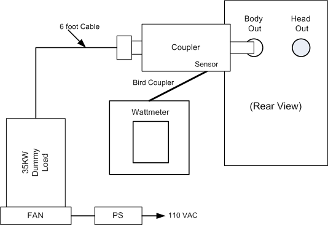
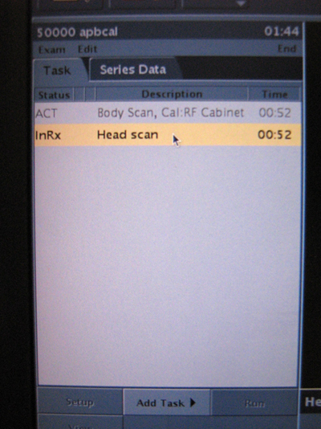

Operating Documentation
Direction 5440001-3, Rev# 6
Signa HDxt Service Methods
Module Version 18.0, Version Date 6/8/10
Operating Documentation |
| Required Persons | Preliminary Reqs | Procedure | Finalization |
|---|---|---|---|
| 1 | N/A | 45 mins. | 5 mins. |
| Item | Qty | Effectivity | Part# | Manufacturer | |
|---|---|---|---|---|---|
| Power Measurement Kit (Wattmeter Kit) | 1 | - | 5307511 | - | |
| Digital Multimeter | 1 | - | 46-194427 P284 | - | |
| Medium Phillips Screwdriver | 1 | - | - | - | |
| 12-inch Crescent Wrench | 1 | - | - | - | |
| Small Flat Head Screwdriver | 1 | - | - | - | |
| ||||
| FATAL ELECTRIC SHOCK HAZARD. | ||||
| THE RF AMPLIFIER IS NOT DISABLED. | ||||
| TO PREVENT FATAL ELECTRIC SHOCK, ENSURE THE RF AMPLIFIER IS DISABLED WHILE CONFIGURING THE CALIBRATION TOOLS. |
| ||||
| Property Damage! Prevent Coil And Associated Switch Damage, By Removing All Phantoms And Hardware (i.e., Head Coil, Surface Coil) From The Magnet Bore. | ||||
| ||||
| Possible equipment damage. Do not operate the RF amplifier with an improper load connected to its output. Doing so may permanently damage the amplifier. | ||||
| ||||
| Possible equipment damage. Do not connect/disconnect Wattmeter Sensor while Meter is ON. Always turn Meter OFF prior to plugging/unplugging Sensor. | ||||
| Condition | Reference | Effectivity |
|---|---|---|
Recommended Warming Time: Exciter - 20 minutes | - | - |
- | - |
| ||||
| fatal electric shock hazard. | ||||
| the RF Amplifier is not disabled. | ||||
| to prevent fatal electric shock, ensure the rf Amplifier is disabled while configuring the calibration tools. |
Verify that the system is idle and all coils have been removed from magnet bore.
Open the front door of the PEN Cabinet.
On the front of the Driver Module, disable T/R error reporting by setting the TR and DD switches to the DISABLE (disable faults) position.
Illustration 1: Driver Module Switch

| NOTE: | HV should remain set to Enable. |
Place the RF Enable switch on the DTX1 Exciter, located in the top of the PEN cabinet, into the Disable (down) position. See Illustration 2.
Illustration 2: RF ENB Switch

Use DVM to measure resistance of input to the dummy load. Confirm resistance measures between 50 ohms +/- 5 ohms.
| NOTE: | If the dummy load is out of spec return 3T RF kit for repair. Do NOT proceed with RF amp output calibration. |
| ||||
| FATAL ELECTRIC SHOCK HAZARD. | ||||
| THE RF AMPLIFIER IS NOT DISABLED. | ||||
| TO PREVENT FATAL ELECTRIC SHOCK, ENSURE THE RF AMPLIFIER IS DISABLED WHILE CONFIGURING THE CALIBRATION TOOLS. |
| ||||
| Possible equipment damage. Do not turn connect/disconnect Wattmeter Sensor while Meter is ON. Always turn Meter OFF prior to plugging/unplugging Sensor. | ||||
Verify scanner is in “idle”. Confirm RF ENB on DTX1 Exciter in Disable (down) position. DTX1 Exciter is located in upper part of Penetration Cabinet. See Illustration 2.
Connect the Output of the RF Coupler to the Dummy Load.
Illustration 3: Complete Body Output Test Setup

Connect one end of the Wattmeter cable to the Wattmeter Sensor connector, (RS232 is unused). Connect the other end to the Coupler.
| ||||
| Do Not Apply RF Power To The Dummy Load Without Its Fan In Operation. Doing So Will Result In Catastrophic Damage To The Dummy Load. | ||||
Make sure to plug the fan for the dummy load into a service outlet located in the upper right part of the PGR Cabinet. AT NO TIME should you use this dummy load without its fan running.
Place the RF ENB switch into the Enable (up) position.
| NOTE: | For a more detailed discussion of the Wattmeter, see Watt Meter (5307511) Introduction. |
Press the [ON] button on the Wattmeter. (If coupler and sensor is not correctly attached to the amplifier you will get a “No Sensor” indication).
Select the arrow  button under Scale.
button under Scale.
Type: 50000 to set the range.
Select <Enter> button.
Check the setting by selecting the arrow button under Scale.
Press Enter to exit.
Select the arrow button under Fwd Units make sure the scale reads “W” (or “kW “on some watt meters). If the scale reads dBm, select the arrow button under Fwd Units again, to toggle the scale to read “W” (Watts or kW kiloWatts) on the TOP, Forward Power scale. Ignore the BOTTOM, reflected Power scale value. It is not used during Maximum Power Calibration.
Select the Shift button.
Select the arrow button under Setup.
Verify that the output reads 43, and then hit the Enter button.
Illustration 4: Wattmeter Display Set to Read Peak Power Sensor

| NOTE: | This action displays the Sensor Type configured in the Wattmeter. This procedure uses Sensor” Type 43”, which is optimized for peak power measurement. |
Click the Enter button.
Select the [Type] button and then toggle to change the unit of measurement to Peak.
If an offset exists, press the Offset button on the wattmeter. Enter in the numerical value that was displayed on the kits offset card and press the Enter key.
| NOTE: | If entering a negative value, first enter the numerical value then the minus symbol (-). |
Illustration 5: Wattmeter Set to Display Peak Power

Place the RF Enable switch on the exciter (located on the top of the PEN cabinet) to the enable (up) position.
Prepare the system to scan in Body mode. Verify that the system is idle and all coils have been removed from magnet bore.
Click the Scan New Pt buttons.
Illustration 6: New Patient Icon

Patient Id: geservice, and then press Enter.
Weight (lb): 300, and then press Enter.
Choose Show All Protocols... and then Service. Select apbcal, click the center arrow, and then click the Accept button.
Click the Start Exam button.
Set Landmark.
Click [Advance Scan].
Click [Save RX].
Select the Research Options from the drop down next to the Scan button. Then choose Setup Params. Set TG to 50[Done].
Select [Research Options], then choose Display CVs.
Pull down Research menu, and then choose Download.
In the Scan drop-down list, choose Manual Prescan.
Select Scan TR.
Verify Body LED is illuminated on front of RF Amp.
Set the Transmit Gain to 180. Make sure everything is functioning normally and you are getting a reading on the Wattmeter.
Slowly increase the TG to 200. (If the amplifier trips, reset the TG at its highest setting before tripping).
| NOTE: | Allow 10 seconds for the meter reading to stabilize before making the next adjustment. |
Reduce the TG to 0 (zero) once the RF Output is calibrated to specification.
If Head Output calibration is necessary, continue to Section 3.7, Amp Head Maximum Power Setup and Calibration.
| NOTE: |
Do not perform head output power calibration until body output calibration has been completed.
Verify that the system is idle and only the head coil is installed in the bore and connected to the system.
Remove the front cover of the PEN Cabinet.
Confirm TR and DD error reporting disabled at Driver Module by setting disable switches to DISABLE (down) position. See Illustration 1.
| NOTE: | HV should remain set to Enable. |
Verify scanner is in “idle”. Confirm RF ENB on DTX1 Exciter in Disable (down) position. DTX1 Exciter is located in upper part of Penetration Cabinet. See Illustration 2.
Connect the RF Coupler output to the Dummy Load.
Illustration 7: Complete Head Output Test Setup

Connect one end of the Wattmeter cable to the Wattmeter sensor output. (RS232 is unused). Connect the other end to the coupler.
Make sure to plug the fan for the dummy load into a service outlet in the PGR Cabinet. AT NO TIME should you use this dummy load without its fan running.
| NOTE: | DO NOT APPLY RF POWER TO THE DUMMY LOAD WITHOUT ITS FAN IN OPERATION. DOING SO WILL RESULT IN CATASTROPHIC DAMAGE TO THE DUMMY LOAD. |
Put the RF ENB switch in the Enable (up) position.
For more information on the Wattmeter, see Wattmeter (2372868) Introduction.
Press the [ON] button on the Wattmeter. (If coupler and sensor is not correctly attached to the amplifier, you will get a “No Sensor” indication).
Select the [Arrow ]button under Scale.
Type 5000 to set the range and then hit [Enter].
To validate the setting, select the [Arrow] button under Scale.
To exit, press the <Enter> key.
Select the [Arrow] button under Fwd Units. Make sure the scale reads “W” (or “kW” on some wattmeters). If the scale reads dBm, select the [Arrow ]button under Fwd Units again to toggle the scale to read “W” (Watts or kW kiloWatts) on the TOP, Forward Power scale. Ignore the BOTTOM, reflected Power scale value. It is not used during Maximum Power Calibration.
Select the <Shift> button.
Select the [Arrow] button under Setup.
Verify that the wattmeter display reads “43”. If not, type 43 and then press the Enter button.
Illustration 8: Wattmeter Display Set to Read Peak Power Sensor
| NOTE: | This action displays the Sensor Type configured in the Wattmeter. This procedure uses Sensor “Type 43”, which is optimized for peak power measurement. |
Press the Enter button.
Select the arrow button under Type, change unit of measurement to Peak.
If an offset exists, press the Offset Button on the wattmeter. Enter in the numeric value that was displayed on the kits offset card and then press the Enter button.
| NOTE: | If entering a negative value, first enter the numerical value then the minus symbol (-). |
Click Apply in the pop-up that appears.
Illustration 9: Wattmeter Set to Display Peak Power and Watts
The meter is now configured to read RF Peak Power, in watts, for the Head Maximum Output calibration.
Prepare the system to scan in Head mode:
Install head coil; used for coil id only.
In Task window in upper left corner, double-click Head Scan Series.
When popup appears, click on [Apply].
Illustration 10: Head Scan Selection in Task Tab

Confirm head scan is highlighted and status is “InRx”.
Landmark on head coil and advance to scan.
Select [Save Rx].
From the Scan icon, pull down [Research Options] and then choose [Setup Params].
Set TG to 160 and then choose [Done].
Click on arrow next to scan button [Research] and then choose [Display CVs].
Click [Accept].
From the Scan icon, pull down [Research] and then choose [Download].
On the Scan drop-down list, select Manual Prescan.
Select [Scan TR].
Set the Transmit Gain to 180. Make sure everything is functioning normally and you are getting a reading on the Wattmeter.
Slowly increase the TG to 200 (if the amplifier trips, reset the TG to its highest setting before tripping).
Select [Done].
In the Task window in the upper left corner of screen, select [End], and then [End Exam]. When the popup appears, click [OK].
Re-enable TR and DD Fault switches on front of driver module. See Illustration 1.
Put RF ENB switch in the Enable (up) position.
After completing RF Amp calibration, proceed to the Universal Power Monitor - Head and Body Setup and Calibration procedure.